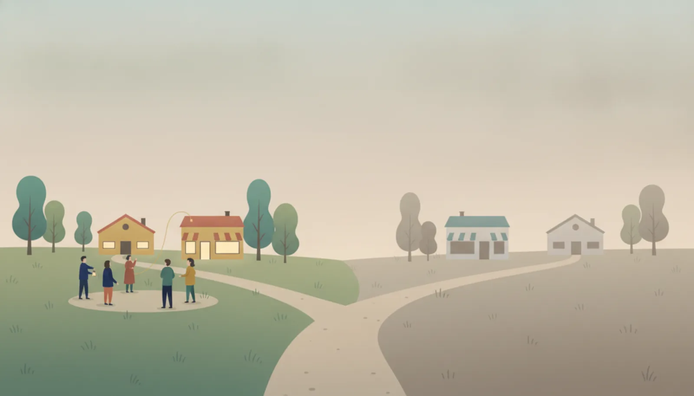
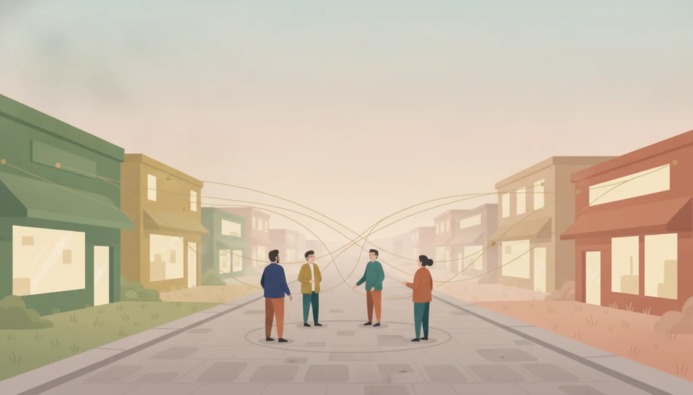
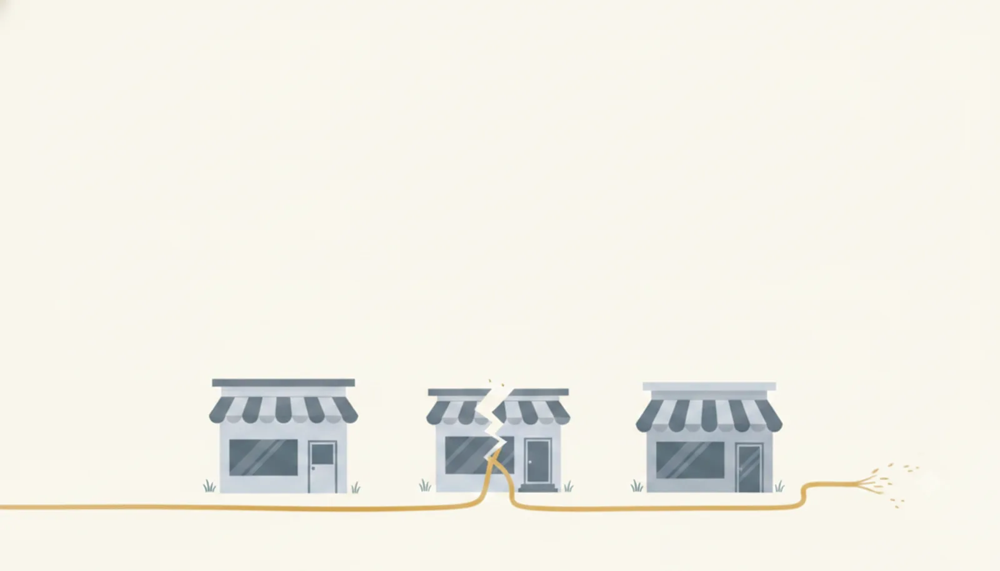

─ 再開発した街と、アーケードだけ替えた街

全国の商店街が衰退していくなかで、再生した街があります。同じ時期に、同じくらいの費用をかけて、それでも沈んでいった街もあります。ふたつの街を分けたものは、建物でも立地でもありませんでした。
分岐点：建物より先に、地権者の対話に時間を使ったか
1988年、開町400年祭。人通りはまだ多く、数字のうえでは衰退の気配すらありませんでした。それでも当時の振興組合理事長は問いました。「この賑わいが、100年続くのか」。
1990年、青年会を中心に再開発委員会が発足。全国の商店街を視察して回り、たどり着いたのは「商店街全体を、ひとつのショッピングセンターと見立てる」構想でした。しかし本当の難所はここからです。商店街の土地は、何十人もの地権者のものだからです。
丸亀町が選んだのは、土地の「所有」と「利用」を分ける道でした。地権者は土地を手放しません。そのかわり、1998年に設立したまちづくり会社（行政出資5%の民間主導）と定期借地権契約を結び、建物はまちづくり会社が所有・運営して、収益を地権者に分配する。テナントの売上に応じて地代が変わる仕組みで、リスクとリターンも分かち合いました。
最初の街区「丸亀町壱番街」が竣工したのは2006年。最初の問いからおよそ18年。その時間の大半は、工事ではなく、地権者どうしの対話と合意づくりに使われています。
出典：高松丸亀町商店街 公式サイト「再開発について」（1988年400年祭／1990年再開発委員会発足／1998年まちづくり会社設立・行政出資5%／所有と利用の分離・変動地代家賃制／2006年壱番街竣工）

ある商店街は、補助金の申請期限に合わせて、老朽化したアーケードの架け替えを決めました。「暗くて古いから人が来ない。明るくきれいになれば、人は戻る」──計画は工事の工程表から逆算して進み、地権者や店主への説明会は数回。質問は出ましたが、「もう決まったことですから」で進みました。
竣工式の日は、たしかに人が集まりました。けれど半年もすると、人通りは元の下降線に戻ります。空き店舗の持ち主は、家賃を下げてまで貸すより「そのまま持っておく」ことを選び続け、シャッターは開きません。テナントの顔ぶれも、営業時間も、改修前と何も変わっていないからです。
10年後に残ったのは、立派な屋根と、その下の変わらないシャッター通り、そして修繕費の負担でした。「箱はきれいになったが、商いは変わらなかった」──そんな言葉だけが残ります。
※ この失敗事例は、実在する特定の団体・個人を描いたものではなく、複数の実例をもとに再構成した「典型パターン」です（編集方針：読む前の、三つの約束）。
建物より先に、
地権者の対話に時間を使ったか。
ふたつの街は、どちらも「ハードに投資」しています。違ったのは順番です。丸亀町は、建物に手を付ける前に、いちばん動かしにくいもの──土地の権利と、それを持つ人たちの気持ち──に十数年をかけました。所有と利用の分離という仕組みは、その対話の中から生まれた「地権者が土地を手放さなくても、街全体を経営できる」ための発明です。
失敗側は、いちばん動かしやすいもの（建物）から着手し、いちばん動かしにくいもの（権利と合意）を後回しにしました。説明会は開かれましたが、それは「決まったことを伝える場」であって、「決めるまえに聴く場」ではありませんでした。アーケードは替えられても、店を貸すかどうかを決めるのは、ひとりひとりの地権者です。そこが動かなければ、街は変わりません。
地域や組織の合意形成には、対話の設計と進行の技術が要ります。きづきくみたて工房は、その練習の場をつくっています。
対話力向上プログラムを見るこの事例の要点をA4一枚にまとめた要約版（PDF）もあります：社内検討用にダウンロード無料・登録不要／出典表記のままご利用ください（CC BY-NC-SA 4.0）
高松丸亀町商店街 公式サイト「再開発について」 https://www.kame3.jp/redevelopment/ （2026年7月閲覧）。年表・事業スキーム（所有と利用の分離、定期借地権、まちづくり会社、オーナー変動地代家賃制）の記述は同ページに基づきます。
失敗事例は、複数の実例をもとに再構成した匿名の典型パターンです。シリーズの編集方針はハブページ「読む前の、三つの約束」をご覧ください。テキストは CC BY-NC-SA 4.0 で公開しています。